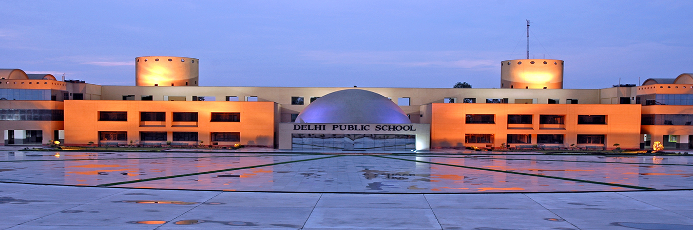
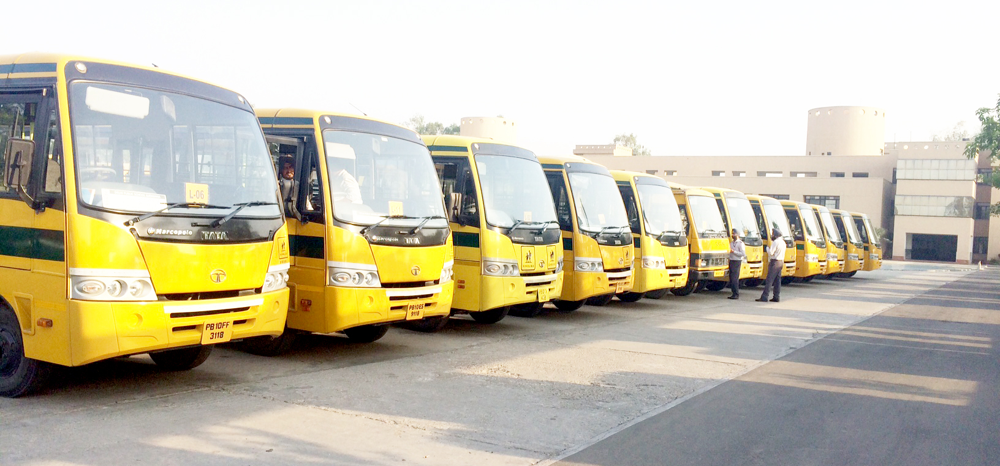

(If you have not checked my school app so click here)
The Delhi Public School Society (DPS) is a large chain of schools. The descriptor "public school" references the model of the long-established English public school. The Delhi Public School Society is the administrative authority for all its institutions in India and abroad.The first school connected to the Delhi Public School Mathura Road was established in 1949.The foundation stone of the school building was laid in 1956 by S. Radhakrishnan, the then Vice President of India.The Central Board of Secondary Education (CBSE) provides the accreditation for all schools within this society except for DPS New Town, Kolkata; DPS Mega City, Kolkata; and DPS International, Singapore. DPS International, Saket, New Delhi, is affiliated with IGCSE, while DPS New Town, Kolkata; DPS Megacity, Kolkata; and DPS International, Singapore, are all affiliated with the ICSE (Indian Certificate of Secondary Education).Delhi Public School Ludhiana was the third collaborative venture between Takshila Educational Society and Delhi Public School Society. There are four premier institutes functioning under Takshila Educational Society – DPS Patna, DPS Pune, DPS Ludhiana and DPS Coimbatore. Delhi Public School Society is one of the largest chains of K-12 schools in the world with over 150 schools in India and foreign shores. The first DPS, DPS Mathura Road was established in 1947 and since then the society has been adding world-class educational institutions all over India and abroad.Takshila Educational Society was set up in 1997 with the explicit objective of establishing educational institutions that would offer the best education possible. It is a society that is committed to education with a global perspective, infusion of latest technology for growth, enhancement of each student’s learning curve and providing a congenial working and learning environment.DPS Ludhiana opened its portals in 2004 and in such a short span of time it has come to be recognized as one of the leading K-12 educational institutions in Punjab.The school offers a learning environment that focuses on the holistic development of individuals by cultivating their unique talents.Delhi Public School Ludhiana was the third collaborative venture between Takshila Educational Society and Delhi Public School Society. There are four premier institutes functioning under Takshila Educational Society – DPS Patna, DPS Pune, DPS Ludhiana and DPS Coimbatore. Delhi Public School Society is one of the largest chains of K-12 schools in the world with over 150 schools in India and foreign shores. The first DPS School, DPS Mathura Road, was established in 1947 and since then the society has been adding world-class educational institutions all over India and abroad.Takshila Educational Society was set up in 1997 with the explicit objective of establishing educational institutions that would offer the best education possible. It is a society that is committed to education with a global perspective, infusion of latest technology for growth, enhancement of each student’s learning curve and providing a congenial working environment. To know more click on this link
The the transport system is very nice.The bus does not come to your house instead it stops at particular stop and nears dps studnets can board there bus from the stop. It's bus is always on time but some times because of traffic it comes late by 15 or 10 minutes. To know more click here
